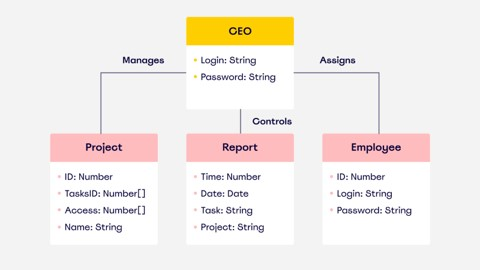

PRÁCTICAS PROFESIONALIZANTES
Se entiende por prácticas profesionalizantes aquellas estrategias y actividades formativas que, como parte de la propuesta curricular, tienen como propósito que los estudiantes consoliden, integren y/o amplíen las capacidades y saberes que se corresponden con el perfil profesional en el que se están formando. Son organizadas y coordinadas por la institución educativa, se desarrollan dentro o fuera de tal institución y están referenciadas en situaciones de trabajo.
En tanto propuesta formativa, las prácticas profesionalizantes se orientan a producir una vinculación sustantiva entre la formación académica y los requerimientos y emergentes del sector socioproductivo.
Esta vinculación intenta dar respuesta a la problemática derivada de la necesaria relación entre la teoría y la práctica, entre el conocimiento y las habilidades, propiciando una articulación entre los saberes escolares y los requerimientos de los diferentes ámbitos extraescolares.
En este sentido, las prácticas profesionalizantes aportan una formación que integra los conocimientos científicos y tecnológicos de base y relacionan los conocimientos con las habilidades, lo intelectual con lo instrumental y los saberes teóricos con los saberes de la acción.
En síntesis, las prácticas profesionalizantes propician una aproximación progresiva al campo ocupacional hacia el cual se orienta la formación y favorecen la integración y consolidación de saberes a que se refiere ese campo ocupacional, poniendo a los estudiantes en contacto con diferentes situaciones y problemáticas que permitan tanto la identificación del objeto de la práctica profesional como la del conjunto de procesos técnicos, tecnológicos, científicos, culturales, sociales y jurídicos que se involucran en la diversidad de situaciones socioculturales y productivas que se relacionan con un posible desempeño profesional.
ALCANCE DEL PERFIL PROFESIONAL
El Técnico Superior en Desarrollo de Software estará capacitado para producir artefactos de software, lo que comprende su diseño detallado, construcción - reutilizando elementos existentes o programándolos enteramente- y verificación unitaria, así como su depuración, optimización y mantenimiento; desarrollando las actividades descriptas en el perfil profesional y cumpliendo con los criterios de realización establecidos para las mismas en el marco de un equipo de trabajo organizado por proyecto
El proceso de desarrollo de software es una tarea grupal, o también individual y muchas veces multidisciplinaria que se organiza por proyectos. Cada proyecto es negociado y acordado con el cliente o usuario y llevado a cabo por un equipo de trabajo constituido “ad-hoc”, conducido y administrado por un líder que mantiene la relación diaria con el cliente o usuario y asume la responsabilidad operativa del proyecto.
FUNCIONES QUE EJERCE EL PROFESIONAL
-
Modelizar artefactos de software a partir de especificaciones, refinándolas en caso necesario, para determinar el diseño detallado y las características de una solución que las satisfaga en el contexto de la arquitectura del sistema de software del cual van a formar parte.
- ESTO COMPREDE
Interpretar críticamente las especificaciones recibidas.
Interpretar la arquitectura del sistema en el cual se inserta la asignación.
Aplicar patrones de diseño si corresponde.
Diseñar la solución.
Representar el diseño.
Verificar el diseño.

-
Para realizar esto el técnico utiliza lenguajes y herramientas de representación y modelización de sistemas, como UML y otras técnicas de graficación y especificación, incluyendo diccionarios de datos del proyecto y catálogos de patrones de diseño. También considera las características de la tecnología a utilizar y consulta a pares y al líder del equipo de trabajo para interpretar los problemas a resolver y verificar sus conclusiones y enfoques.
-
Al realizar esto procura atenerse a los lineamientos de la arquitectura establecida para el proyecto y respeta criterios de seguridad informática, confidencialidad y las políticas vigentes en la organización en la cual se desempeña, así como las prácticas establecidas para el proyecto.
-
Construir los artefactos de software que implementen el diseño realizado, aplicando patrones o reutilizando código en la medida en que resulte posible. Al hacer esto, y en función de lo acordado para el proyecto, optimizará el desempeño de lo que construya aplicando buenas prácticas de programación y documentación.
- ESTO COMPRENDE
Reutilizar elementos ya existentes.
Redactar código.
Optimizar el código.
Controlar cambios y versiones.
Utilizar ambientes de desarrollo.
-
Verificar los artefactos de software construidos considerando las necesidades de cobertura de la prueba. Para ello diseña los casos considerando el entorno de pruebas y ejecuta pruebas unitarias, así como registra los datos y resultados. De ser necesario, realiza acciones correctivas sobre el código hasta satisfacerse de que cumpla con las especificaciones recibidas.
- ESTO COMPRENDE
- Considerar las necesidades de cobertura de la prueba.
Diseñar los casos de prueba.
Preparar el entorno de pruebas.
Realizar pruebas unitarias.
Registrar casos de prueba, datos y resultados de pruebas y acciones correctivas.
-
Revisar el código de artefactos de software para resolver defectos o mejorarlo. Este código puede ser propio o ajeno. Esta actividad comprende revisiones cruzadas con otros integrantes del proyecto para asegurar la calidad del producto. Algunas asignaciones requieren una revisión de código ya existente para poder ampliar funcionalidades o refactorizarlo.
- ESTO COMPRENDE
- Interpretar código.
- Diagnosticar defectos.
- Depurar defectos.
Documentar sus actividades y los resultados obtenidos aportando elementos para asegurar la calidad de los proyectos de acuerdo a normas y estándares establecidos.
Registrar actividades realizadas.
Documentar todos los productos de su labor.
-
Gestionar sus propias actividades dentro del equipo de trabajo del proyecto. Ello comprende la planificación (organización y control) de las tareas a realizar, el oportuno reporte de avances y dificultades y el registro y reflexión sobre lo realizado para capitalizar experiencias y estimar métricas aplicables a su actividad.
Obtener métricas a partir de los registros de actividades.
Reportar avances y dificultades.
Planificar sus actividades.
Controlar sus actividades.
-
La construcción de software es una actividad que se desarrolla por proyectos, los que son llevados a cabo por un equipo de trabajo y el técnico tiene que realizar un aporte efectivo al trabajo conjunto. Para ello tiene que mantener una comunicación efectiva con quien lidere el grupo o lo asesore y con el resto de su equipo de trabajo, informando y consultando sobre problemas que observe al enfrentar sus asignaciones. También debe desarrollar su propia profesionalidad estimando tiempos y comparando resultados, extrayendo conclusiones formales o informales.
ÁREA OCUPACIONAL
-
Este técnico se ocupa en organizaciones de diversos tipos. Empresas que realizan desarrollo de software por encargo de organizaciones locales o extranjeras, que proveen software junto con otros servicios de asesoramiento y consultoría, y, en menor número, que desarrollan sus propios productos de software para vender en el país o en el exterior. También en organizaciones dedicadas a otras actividades, pero que producen el software que necesitan para desarrollar sus propias actividades o que integran en productos que venden.
HABILITACIONES PROFESIONALES
-
Si bien las actividades de este técnico superior no están orientadas a un tipo de software en particular, conviene tener en cuenta que el software es utilizado crecientemente en sistemas que afectan a la seguridad pública. Estos sistemas, denominados críticos para la seguridad, son lo que, en un sentido general, involucran riesgos que conllevan la posibilidad de pérdidas inaceptables (daños para la salud o aún la vida humana, daños a la propiedad, contaminación ambiental, conflictos sociales, grandes pérdidas monetarias).
-
En función de estos riesgos, se establecen las siguientes habilitaciones profesionales para el Técnico Superior en Desarrollo de Software, con las limitaciones o exclusiones que se indican en cada caso. Estas habilitaciones tienen efecto para su desempeño en forma autónoma o asumiendo plenamente la responsabilidad por los resultados que obtenga su grupo de trabajo.
-
Diseñar, construir y verificar artefactos de software de complejidad media, correspondiente a sistemas de información o vinculada indirectamente al hardware o a sistemas de comunicación de datos, respondiendo a especificaciones.
ÁREA EXCLUIDA
-
Queda excluido de esta habilitación el software correspondiente a sistemas críticos para la seguridad, como es el caso de los que involucren el procesamiento de información que conlleve riesgos efectivos para terceros. Particularmente, queda excluido el software destinado a:
Control de equipos y procesos médicos, industriales o de domótica que puedan poner en riesgo inmediato o mediato la salud de personas;
Procesamiento de información crítica para los individuos, como ser la que sirva para corroborar su identidad o características de su estado de salud, para demostrar situaciones legal, fiscal, patrimonial u otras que afecten a su patrimonio o a sus libertades;
Procesamiento en línea de transacciones financieras importantes. En estos casos, requerirá la supervisión de profesionales habilitados;
Controlar la calidad de artefactos de software para resolver defectos o mejorarlos, lo que incluye revisar especificaciones, diseños y código.
Esto se realiza bajo supervisión en el marco de equipos de desarrollo de software.